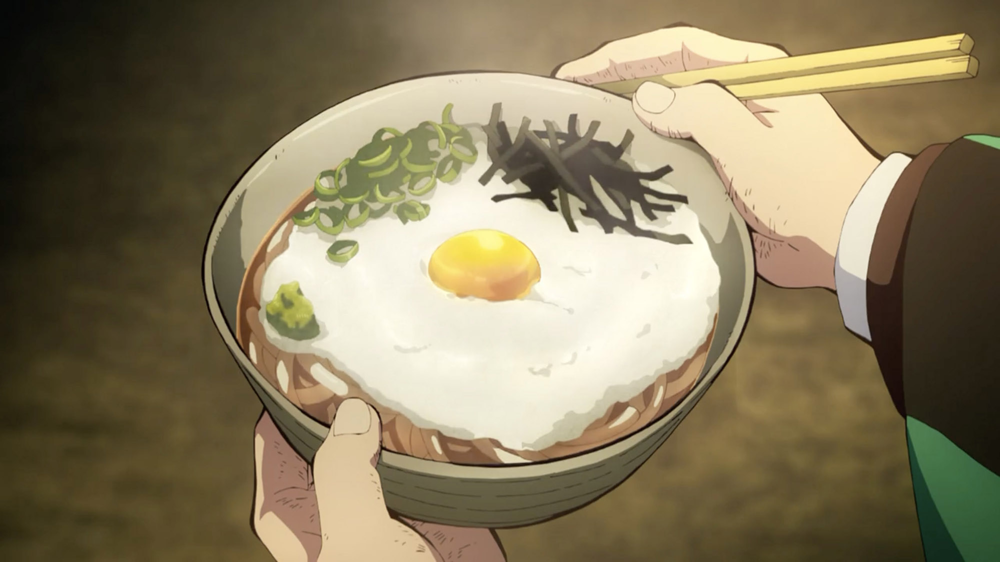

Yamakake Udon
Food that appears in the anime looks so good—there are many anime–inspired recipes out there!
We love Kimetsu
no Yaiba a.k.a. Demon Slayer, and the main character Tanjiro is seen eating a
delicious looking udon.
We recreated the udon using our Original Flavor Udon! The udon is called yamakake udon, which is topped
with
grated yamaimo.
Mixing the yamaimo with soup is good, but you can also add soy sauce for more flavor! Mix well,
and enjoy!
Ingredients
Udon
- 1 serving Original Flavor Udon
Soup
- 1 packet Original Flavor Udon Soup Seasoning
- 1 ¼ cups Hot Water
Toppings
- ½ cup Grated Yamaimo (Japanese Mountain Yam)
- 1 Egg Yolk
- Scallions chopped
- Dry Seaweed trimmed
- Wasabi by preference
Steps
- Peel the skin off the yamaimo and grate. Chop the scallions and set aside.
- Follow the package instructions of the udon to cook and prepare the soup. Pour the udon and soup
in a bowl.
- Add the grated yamaimo (Step 1) on top of the udon. Add the egg yolk to the center and top with
chopped scallions,
nori seaweed, and wasabi. Mix together and enjoy!.
*You can also add soy sauce and mix into the grated yamaimo for more flavor!
